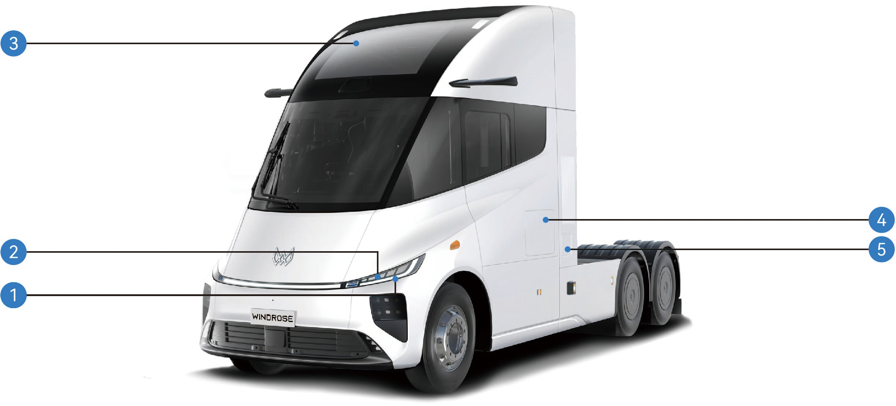
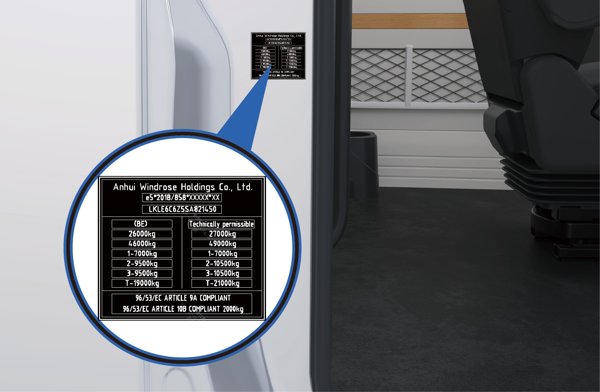
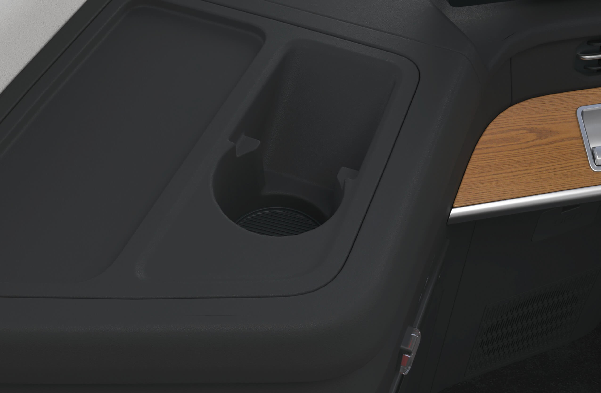
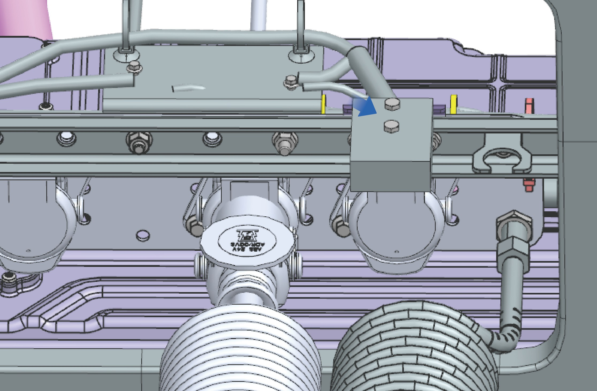

お客様へ
このたびはWindrose車両をお選びいただき、誠にありがとうございます。
はじめて車両を運転される前に、このオーナーズマニュアルをよくお読みください。本書には、車両の機能、安全な操作方法、整備要件、および技術的な仕様に関する重要な情報が記載されています。これらの情報をご理解いただくことで、安全で最適な運転パフォーマンスを実現するお役に立てます。
車両の仕様やオプション装備の違いにより、お届けした車両が本マニュアルの説明や図と一部異なる場合があります。Windroseは、継続的な製品改良の一環として、予告なく車両のデザイン、仕様、および装備を変更する権利を留保します。
本マニュアルに記載されている情報、図、および技術データは、発行時点において正確なものです。これらは参考情報として提供されており、契約上の約束を構成するものではありません。
本オーナーズマニュアルのいかなる部分も、Windroseの事前の書面による許可なしに、いかなる形式でも複製または転載することはできません。
注：本マニュアルに掲載されている表紙画像および図は参考用のものです。実際の車両の外観および仕様は異なる場合があります。
目次
1. 安全・法令遵守
2. 車両概要
3. 内装・快適装備
4. 充電・出発前準備
5. メータークラスター
6. 走行制御
7. 運転支援
8. 緊急時の対処
9. メンテナンス
ご使用の方へ
↑ トップ運転前に
本車両はバッテリー電気式トラクターユニットです。
日常の運転および整備においては、本オーナーズマニュアル（以下「本書」）に記載されているすべての警告および指示を遵守し、車両の損傷および人身傷害を回避してください。
はじめて車両を運転する前に、本書をよくお読みになり、車両の機能および操作上の要件を把握してください。使用中に問題が発生した場合は、Windroseサービスホットラインにご連絡ください。
本書の著作権はWindroseが保有しています。Windroseの事前の書面による許可なしに、本書のいかなる部分も複製・転載・配布することはできません。
Windroseは、継続的な製品改良の一環として、予告なく本書の内容を更新する権利を留保します。最新の車両情報については、センターディスプレイまたはWindroseモバイルアプリで提供される電子版オーナーズマニュアルをご参照ください。
Windroseウェブサイト：
Windroseサービスホットライン：公式のモバイルアプリストアで「Windrose」を検索してアプリをダウンロードできます。
補足略語は、初出時に「正式名称（略語）」の形式で記載されます。以降は略語を使用します。
警告の説明
↑ トップ運転前に
本書では、以下のシグナルワードおよびシンボルを使用しています。
警告回避しなかった場合に重傷または死亡につながるおそれのある危険な状況を示します。
注意
↑ トップ注意車両またはその部品に損傷を与える可能性がある状況を示します。
補足
↑ トップ補足追加の有益な情報または操作上のガイダンスを提供します。
環境保護
↑ トップ環境保護環境保護またはエネルギー効率に関する情報を示します。
アスタリスク
↑ トップ機能名の後にアスタリスク（*）が付いている場合、その機能は特定の車両モデルまたはオプション設定にのみ適用されることを示します。
図の説明
↑ トップ
この矢印は、図に示された対象物の正確な位置を示します。
この矢印は、図に示された対象物の移動方向を示します。
この矢印は、図に示された対象物の回転方向を示します。
この矢印は、図に示された対象物の反転方向を示します。
環境保護
↑ トップ運転前に
Windroseは、持続可能な開発と環境保護に取り組んでいます。本車両は、エネルギー効率の向上と排出量の削減を目的として設計されています。責任ある運転とエネルギー効率の高い方法で車両を操作することで、環境保護に貢献していただけます。
安全運転
運転前に
常に最大許容総重量および軸荷重を遵守してください。過積載は、車両の損傷、制御不能、または人身傷害を招く可能性があります。
衝突による衝撃力を受けたシートベルトは、目に見える損傷がない場合でも交換してください。
警告交換が必要です。
警告
ニュートラルのまま下り坂を走行しないでください。これにより駆動モーターによる制動が失われ、車両の制御不能につながる可能性があります。
運転前にシートを正しい位置に調整してください。シートの位置が不適切な場合、疲労、予期しないシートの動き、または車両の制御不能を引き起こす可能性があります。シートベルトを適切に使用できるシートポジションを確保してください。
シートベルトは重要な安全装置です。車両の走行中は、すべての乗員がシートベルトを正しく着用しなければなりません。
運転中はシートバックを過度に倒さないでください。緊急ブレーキ時に、不適切な着座姿勢によりシートベルトの効果が
低下する可能性があります。
次のいずれかの状況では、速度を30 km/h以下に抑えてください。
自転車専用レーン、踏切、急カーブ、狭い道路、または橋への進入・退出時。
Uターン、右左折、または急勾配の下り坂走行時。
霧、雨、雪、砂埃、またはひょうにより視界が50 m未満の場合。
凍結路面、積雪路面、または泥道での走行時。
故障車両を牽引している場合。
↑ トップ
注意電波望遠鏡観測所の近くを走行する場合は、安全な距離を保ってください。レーダー搭載車両は観測機器に電磁干渉を引き起こす可能性があります。
純正部品
運転前に
Windroseは、以下の状況下では部品の保証を提供しません。
走行安全性に関連するシステム（高電圧システム、電気システム、ブレーキ、ステアリング、TBOXなど）への無許可の車両改造。
車両のOBDシステムの改ざん。
安全リスクまたは車両損傷を招く非承認部品または液体の使用。
保証期間中に承認済み液体の使用を確認する書類を提出できない場合。
整備要件に従ってWindrose正規サービスセンターで整備を受けていない場合。
データセキュリティ
↑ トップ運転前に
適用法令に従い、Windroseは位置情報、運転行動データ、音声・映像記録、および個人情報を含む車両データを収集・処理します。
Windroseは、適用される個人情報保護規制および業界標準に準拠して、当該データを保護するための適切な技術的および組織的措置を実施しています。
車両改造
運転前に
↑ トップ改造前に必要な書類
車両の改造はすべて、適用される技術的および法令上の要件に準拠する必要があります。改造前に、関連する技術書類をWindroseに提出しなければなりません。
提出書類には、少なくとも以下の項目を含める必要があります。
改造後の車両の使用目的および使用条件。
改造後の総重量および軸荷重。
改造後の車両の外形寸法（作業形態を含む）。
ボディフロアの地上高。
ボディの架装方法。
サブフレームの概略図。
車両廃棄
運転前に
↑ トップ道路走行の要件を満たさなくなった車両は、適用される環境規制に従って廃棄処理しなければなりません。
車両の廃棄処理および高電圧バッテリーのリサイクルは、Windroseまたは認定リサイクル業者が実施しなければなりません。
警告高電圧バッテリーの不適切な廃棄は、火災または環境汚染を引き起こす可能性があります。無許可で高電圧バッテリーを分解または廃棄しないでください。
高電圧バッテリーのリサイクル
Windroseは、高電圧バッテリーの容量および状態を検査し、その時点の適用法令および市場状況に従って高電圧バッテリーをリサイクルします。
高電圧バッテリーのリサイクル：リサイクルおよびその後の処理は、Windroseまたは Windroseが指定するサードパーティのリサイクル業者が行う必要があります。
高電圧バッテリーの輸送：高電圧バッテリーは専門の輸送機関が輸送します。処理のために専門のリサイクル業者に通知するには、Windrose正規サービスセンターにご連絡ください。
警告
偶発的な火災や深刻な環境汚染を防ぐため、使用済み高電圧バッテリーを廃棄または投棄しないでください。
廃棄された高電圧バッテリーを他の企業や個人に引き渡さないでください。無許可での高電圧バッテリーの分解によって生じた環境汚染や安全事故については、責任を負うことになります。
エコドライブ
運転前に
以下の実践により、走行距離とエネルギー効率を最大化できます。
一定速度を維持し、急加速または急ブレーキを避けてください。
定期的なメンテナンスにより車両を良好な状態に保ってください。
ニュートラルギアでの走行は避けてください。Eアクスルへの潤滑が不十分になり、部品の損傷を招きます。
冬季走行
↑ トップ運転前に
冬季走行の準備
最低気温に合わせた高品質の冷却液を使用し、冷却液の凝固点が当地の最低気温よりも低くなるようにしてください。
低温下でバッテリーが凍結しないよう、常にバッテリーを満充電の状態に保ってください。
冬季における冷却液の使用
↑ トップ寒冷期または車両を寒冷な場所に駐車する場合は、冷却液の不凍性能を確保してください。Windroseが推奨する冷却液をお使いください。
冬季走行上の注意事項
スノーチェーンまたはスタッドレスタイヤの使用を推奨します。
急加速、急ブレーキ、および高速でのシャープなターンを避けてください。
雪や氷で覆われた道路を走行する場合は、常用ブレーキの制動力を確保するために低速で走行してください。
車間距離を適切に確保してください（雨雪路や
スノーチェーンを装着した後、車両を発進させ、チェーンが緩んでいないか、またはタイヤが正しく装着されているかを確認してください。
↑ トップ警告スノーチェーン使用時は、事故を防ぐため最大有効走行速度を超えないようにしてください。
凍結路面では車間距離を広く取ってください（常用ブレーキの制動距離が延びます）。
タイヤチェーンの使用
運転前に
タイヤチェーンを使用する際は、以下の点に注意してください。
厚い雪や氷に覆われた道路を走行する場合は、タイヤチェーンの使用を推奨します。
タイヤチェーンは、車両に装着されているタイヤのサイズおよびタイプに適合したものを使用してください。
駆動軸の外側タイヤ（両側）にタイヤチェーンを装着してください。
タイヤチェーンの装着または取り外し時に、タイヤを傷つけないよう注意してください。
注意
 雪や氷のない長い道路を走行する場合は、タイヤチェーンを取り外してください。
雪や氷のない長い道路を走行する場合は、タイヤチェーンを取り外してください。走行中にタイヤチェーンが車両の部品に接触または干渉しないようにしてください。
タイヤチェーンの装着および取り外しは、車両が平坦な地面に駐車している場合にのみ行ってください。
高温・熱帯地域での走行
運転前に
走行前に車両の状態を確認してください。
冷却液の液面が正常範囲内にあることを確認し、漏れがないか点検してください。
ライター、スプレー缶、香水などの可燃物を、長時間にわたりインストルメントパネル上や直射日光が当たる場所に放置しないでください。高温により加圧容器が破裂し、火災の危険があります。
走行中は以下の点に注意してください。
警告灯が点灯した場合は、直ちに走行を停止し、
Windrose正規サービスセンターにご連絡ください。
タイヤ空気圧およびタイヤ温度に注意してください。タイヤ空気圧またはタイヤ温度が異常な場合は、直ちに走行を停止し、タイヤを自然に冷却させてください。水をかけたり空気を抜いたりしてタイヤを冷却しないでください。これによりタイヤの老化や摩耗が促進され、最悪の場合バーストを招く可能性があります。
走行中にタイヤがバーストした場合は、直ちにハザードランプスイッチを押し、ステアリングホイールを9時と3時の位置でしっかり握ったまま切らずに維持し、ブレーキペダルを断続的に踏んで車速を徐々に落とし、他の道路利用者に注意を促してください。
タイヤ空気圧およびタイヤ温度を監視してください。
どちらかが異常な場合は、安全な場所に停車し、タイヤを自然に冷却させてください。水をかけたり空気を抜いたりしてタイヤを冷却しないでください。これによりタイヤの老化が促進され、バーストのリスクが高まります。
メータークラスターのインジケーターおよび警告灯に注意を払い、車両関連の故障表示灯または警告
凸凹路・滑りやすい路面での走行
運転前に
凸凹路・滑りやすい路面を走行する際は、以下の点に注意してください。
凸凹道路では、快適性を向上させ、サスペンションおよびショックアブソーバー部品の摩耗を最小化するために減速してください。
滑りやすい路面では、牽引力の喪失および車両の横滑りを防ぐために速度を落とし、ブレーキをゆっくり踏んでください。
濡れた路面や滑りやすい路面で車両が横滑りし始めた場合は、常用ブレーキを使用して滑らかに速度を落とし、急なステアリング操作を避けてください。
坂道走行
↑ トップ運転前に
上り坂走行の注意事項
坂道発進時に車両が後退した場合は、直ちにブレーキペダルを踏み、電子式駐車ブレーキをかけてから発進操作をやり直してください。
上り坂では低速を維持し、一定のペースで走行してください。アクセルペダルは徐々に踏み込み、急加速や急ブレーキを避けてください。
下り坂走行の注意事項
下り坂に入る前に減速し、制御された速度で下り坂に進入してください。
ニュートラルのまま下り坂を走行しないでください。これにより駆動モーターによる制動が失われ、車両の制御不能につながる可能性があります。
下り坂走行前に、ブレーキシステムが正常に機能していることを確認してください。異常が疑われる場合は、走行を再開する前に問題を修正してください。
横転リスクを低減するために、下り坂では急なステアリング操作を避けてください。
長い下り坂では、継続的なブレーキ操作を避けてください。ブレーキの過熱によるブレーキフェードを防ぐため、適切な速度制御とブレーキ技術を活用してください。
安全上の不具合の報告
↑ トップ運転前に
車両に安全関連の不具合があると疑われる場合は、可能な限り速やかに安全な場所に停車し、直ちにWindrose カスタマーサポートまたはWindrose正規サービスステーションにご連絡ください。
Windroseは、適用法令により必要な場合、安全通知、サービスキャンペーン、またはリコールを発行することがあります。欧州連合においては、車両の安全リコールはEU市場監視・型式認定フレームワークのもとで処理され、関連する加盟国の型式認定・市場監視当局と連携して対応されます。Windroseが提供するすべての安全指示およびサービスキャンペーン要件に従ってください。
Windroseサービスホットライン： [EU連絡先詳細要確認]
Windroseサービスウェブサイト： [EUサービスウェブサイト要確認]
正規サービスネットワーク： [EUサービスネットワーク要確認]
車両外観の概要
車両識別

前方ウインカーランプ／昼間走行灯
駐車灯 3. パノラミックサンルーフ
4. サイドツールボックス 5. 充電ポート

|
|
|
|
|
|
|---|---|---|---|---|---|
|
|
|
|
|
|
|
|
|
|
|
|
車内の概要
車両識別

|
|
2. |
|
3. |
|
|---|
|
|
2. |
|
3. |
|
|---|---|---|---|---|---|
|
|
5. |
|
6. |
|
|
|
8. |
|
9. |
|
|
|
11. |
|
12. |
|
|---|---|---|---|---|---|
|
|
14. |
|
15. |
|
車両銘板とVIN
車両識別
車両銘板

車両銘板は、車両の右側スライドドアフレーム（Cピラー）に貼付されています。
銘板には以下の情報が表示されています。
製造業者名
型式認定番号（WVTA）
車両識別番号（VIN）
登録予定最大許容重量
技術的に許容される最大積載重量
適用規制により要求されるその他の規制情報
車両識別番号

車両識別番号（VIN）は、前軸中心線付近の右側フレームサイドメンバーに刻印されています。
モーター銘板およびコードの位置
車両識別

モーター銘板の位置
モーターシリアルナンバーの位置
注意
モーターシリアルナンバーの刻印（印象）は、車両出荷時にモーター関連書類と一緒に提供されます。将来の参照のためにこの書類を保管してください。
異なるメーカーから供給された駆動モーターは仕様が異なる場合があるため、モーター銘板および関連書類に記載されている情報が異なる場合があります。実際の製品をご参照ください。
フロントガラスのマイクロ波／RF透過性 車両識別
本車両のフロントガラスには、無線周波数（RF）信号の透過を妨げる金属コーティングが施されていません。
電子料金収受（ETC）デバイス、通行料タグ、テレマティクス機器、その他のRFベースのデバイスは、機器製造業者が提供する取付説明書に従ってフロントガラスに取り付けることができます。
電動スライドドア
↑ トップ車両へのアクセス
電動スライドドアは車両の右側に装着されており、複数の操作方法で開閉できます。
操作方法
車外からの操作

↑ トップ電動：車両のロックが解除されている状態で、フラッシュドアハンドルスイッチを押すと、電動スライドドアが自動的に開閉します。
手動：車両のロックが解除されている状態で：
1. フラッシュドアハンドルの前端を押してリリースします。
2. ハンドルを外側に引いてスライドドアのロックを解除します。
3. ドアを手動でスライドして開けます。

乗車方法

電動スライドドアが開いた後、以下の手順でキャブに乗り込んでください。
ドアに向かって立ち、両手で左右のグラブハンドルを握ります。
一方の足を下段ステップに乗せ、体を引き上げます。
もう一方の足を上段ステップに乗せます。
グラブハンドルの握る位置を上に移動させます。
車両キャブに乗り込みます。
乗降時の滑落または転落により、人身傷害を招く可能性があります。
濡れたまたは汚れた履物は滑落リスクを大幅に高めます。キャブへの乗降時は、十分注意を払ってください。
キャブの乗降時は、常に3点支持を維持してください（両手と片足、または両足と片手）。
車両から飛び降りないでください。
車内からの操作
車両のロックが解除されている状態で：

車両情報スクリーンで「コントロールセンター」を選択します。
「車内」インターフェースに切り替えます。
「スライドドア」コントロールボタンを押して電動スライドドアを開閉します。
電動：車両のロックが解除されている状態で、スライドドア前方のBピラートリムパネル上のスイッチを押してドアを開閉します。
手動：スライドドアが閉まっている場合は、室内ハンドルを後方に引いてドアのロックを解除し、手動でスライドして開けます。
スライドドアが開いている場合は、室内ハンドルを持ってドアを前方にスライドして閉めます。
車内緊急時


電動スイッチまたは室内ハンドルが故障した場合：
スライドドア保護パネルの下部カバープレートを取り外します。
緊急解除ケーブルを引いてスライドドアを手動でロック解除します。
セントラルロックスイッチ

スライドドアを閉めた後：
インストルメントパネル右側のボタンクラスターにあるセントラルロックスイッチを押してスライドドアをロックします。
ドアがロックされるとステータスインジケーターが点灯します。
スイッチを再度押すとドアのロックが解除されます。
スライドドアの手動モード

手動モードは車両情報スクリーンから有効または無効にできます。
「コントロールセンター」を選択します。
「監視」インターフェースに切り替えます。
「スライドドア手動モード」を選択します。
↑ トップ手動モードが有効の場合、スライドドアは手動でのみ操作できます。
スライドドア挟み込み防止機能
自動閉扉動作中に障害物を検知した場合、ドアは停止し、自動的に開いた状態に戻ります。
注意事項
↑ トップ警告挟み込み防止機能は電動閉扉操作中のみ有効です。手動操作時は作動しません。
シートベルト
↑ トップ車両へのアクセス
運転席および助手席にはシートベルトが装備されています。シートベルトは急ブレーキや衝突時の乗員への傷害を防止または軽減します。
操作方法
↑ トップ運転席シートベルトは運転席の左側にあり、直接引き出して装着できます。
助手席シートベルトは助手席の右側にあります。助手席が使用されている場合は、車両が発進する前に乗客にシートベルトを正しく着用するよう促してください。
シートベルトの正しい着用方法
シートベルトを着用する際は、以下のガイドラインを遵守してください。
• ベルトの腰部分は骨盤（腰骨）の低い位置にかかるようにし、腹部にかからないようにしてください。
• ベルトはねじれのないよう、体に密着させてください。
• 肩部分は肩の中央を通るようにしてください。
• ベルトを首にかけたり、腕の下に通したりしないでください。
• シートベルトを締めた後、肩部分を上に引っ張り、腰部分が腰骨にしっかりフィットしていることを確認してください。
• 運転前に必ずシートベルトが正しくバックルに固定されているか確認してください。
シートベルト着用リマインダー
運転席シートベルトが未装着の場合、メータークラスター上のシートベルト警告灯が点灯します。
運転者がシートベルトを装着すると、警告灯が消灯します。
シートベルトの清掃
シートベルトが汚れた場合は、薄めた中性洗剤と水で清掃してください。
1. シートベルトを完全に引き出し、固定します。
2. 汚れた箇所に薄めた中性洗剤液を塗布します。
3. 柔らかいブラシまたは布で優しくシートベルトを清掃します。
4. 必要に応じて清水でよくすすぎます。
5. シートベルトをリトラクターに巻き取る前に完全に乾燥させてください。
濡れたシートベルトをリトラクター機構に巻き取らないでください。

注意事項
警告車両の走行中は、すべての乗員がシートベルトを正しく着用しなければなりません。シートベルトの正しい使用は、急ブレーキや衝突時の傷害リスクを大幅に低減します。
シートベルト未着用または不適切な使用は、重傷または死亡につながる可能性があります。
シートおよびシートベルトが装備されていない場所には座らないでください。
損傷または機能不全のシートベルトを使用しないでください。
各シートベルトは一人用に設計されています。他の人とシートベルトを共用しないでください。
肩ベルトを首にかけたり、腕の下に通したりしないでください。
シートベルトシステムを取り外したり、改造したり、改ざんしたりしないでください。
シートベルト素材を弱める可能性があるため、漂白剤、染料、または化学溶剤でシートベルトを清掃しないでください。
パワーウィンドウ
↑ トップ車両へのアクセス
サイドウィンドウは、インストルメントパネル左側または仮眠スペースコントロールパネルにあるウィンドウコントロールスイッチで操作できます。
本車両には自動ウィンドウ閉鎖機能が装備されています。車両の電源がオフになりロックされると、完全に閉まっていないウィンドウは自動的に閉まります。
操作方法
複合ボタンによるウィンドウ調整

左ウィンドウコントロールスイッチ：上下スイッチボタンを押し続けると左ウィンドウの開度を調整できます。左ウィンドウコントロールスイッチボタンを押して離すと、ワンタッチで左ウィンドウを上げるか下げることができます。
右ウィンドウコントロールスイッチ：上下スイッチボタンを押し続けると右ウィンドウの開度を調整できます。右ウィンドウコントロールスイッチボタンを上
下方向に押して離すと、ワンタッチで右ウィンドウを上げるか下げることができます。
仮眠スペーススイッチによるウィンドウ調整

左ウィンドウコントロールスイッチ：上下方向に
↑ トップウィンドウを自動的に完全に閉または開します（ワンタッチリフト）。
注意事項
警告
ウィンドウを閉める前に、乗客が身体のいかなる部分も車外に出していないことを確認してください。そうしないと、重傷を負う可能性があります。
高速走行中にウィンドウを操作しないでください。
補足ウィンドウの動作中の停止やウィンドウの正常な開閉ができなくなるのを防ぐため、ウィンドウ表面の雪や氷は速やかに取り除いてください。
スイッチボタンを押し続けると左ウィンドウの開度を調整できます。
それぞれのボタンをすばやく押して離すと、ウィンドウを自動的に完全に閉または開します（ワンタッチリフト）。
右ウィンドウコントロールスイッチ：上下スイッチボタンを押し続けると右ウィンドウの開度を調整できます。それぞれのボタンをすばやく押して離すと、
仮眠スペースプライバシーカーテン*
↑ トップ車両へのアクセス
仮眠スペースにはプライバシーカーテン用のレールが装備されており、プライバシーカーテンを取り付けることができます。カーテンにより、仮眠スペースのプライバシー確保および遮光ができます。
* この機能は特定の車両モデルにのみ搭載されています。
操作方法
仮眠スペースプライバシーカーテンレール
カーテンレールは仮眠スペース上部の天井に取り付けられています。プライバシーカーテンは必要に応じてレールに取り付けることができます。
仮眠スペースプライバシーカーテン*

↑ トップ取り付けられたプライバシーカーテンを仮眠スペースに引き渡すことで、休憩中のプライバシー確保および遮光ができます。
注意事項
↑ トップ注意プライバシーカーテンが落下しないよう、強く引っ張らないでください。
パノラミックサンルーフ

↑ トップ車両へのアクセス
本車両にはパノラミックルーフと電動サンシェードが装備されています。パノラミックルーフは固定式で開閉できません。キャブ内への採光と外部の視界を確保します。サンシェードは必要に応じて開閉して遮光できます。
操作方法

パノラミックルーフのサンシェードは車両情報スクリーンから操作できます。
車両情報スクリーンの「車内」インターフェースで「キャノピーサンシェード」を選択します。
ON/OFFボタンを長押しするとサンシェードが開閉します。ボタンを離すと動作が停止します。
ON/OFFボタンを短押しして離すと自動操作が起動し、サンシェードが完全に開または完全に閉まで動作します。
注意事項
注意
損傷を防ぐため、サンルーフのサンシェードを手動で引っ張らないでください。
鋭利な物でサンルーフガラス、サンルーフサンシェード、またはガラス周囲の接着テープを傷つけないでください。
フロントガラス電動サンシェード
↑ トップ車両へのアクセス

強い日差しに向かって走行する際に、フロントガラス電動サンシェードを使用してまぶしさを軽減し、運転の快適性を向上させることができます。
操作方法
フロントガラス電動サンシェードは、インストルメントパネル左側のコントロールスイッチで操作できます。

サンシェード下降スイッチ
このスイッチを長押しするとフロントガラスサンシェードが降下します。スイッチを離すと動作が停止します。
サンシェード上昇スイッチ
このスイッチを長押しするとフロントガラスサンシェードが上昇します。スイッチを離すと動作が停止します。
注意事項
↑ トップ注意損傷を防ぐため、フロントガラス電動サンシェードを手動で引っ張らないでください。
補足サンシェードを使用する際は、視界に支障がないことを確認してください。
車内仮眠スペース
↑ トップ車両へのアクセス
車内には運転者および乗客が休憩できる仮眠スペースが設けられています。
操作方法
仮眠スペースの右上クッションは手動で左側に折りたたんで助手席のスペースを確保できます。車両右側に高さ調整可能な仮眠スペースが装着されている場合、右側仮眠スペースの上部クッションを手動で持ち上げて固定し、複数段調整可能な仮眠ヘッドレストとして使用できます。仮眠スペースを下げるには、右側仮眠スペースの上部クッションを最高位置まで持ち上げてから解放します。
仮眠スペース保護ネット


車両には仮眠スペース保護ネットが装備されています。仮眠スペースを使用する前に、図に示すように保護ネットを展開し、保護ネットの左端・右端・後端にある8つのバックルにそれぞれ仮眠スペース左壁・右壁・後壁の8つのタブを差し込み、保護ネットを所定の位置にロックしてください。
注意
助手席を折りたたむ際または仮眠スペースの上部クッションを持ち上げる際は、指を挟まないよう注意してください。
仮眠スペースを使用する前に必ず保護ネットを正しく取り付けてください。保護ネットを使用しない場合、乗客が仮眠スペースから転落するリスクがあり、事故における負傷や死亡の確率が高まります。
バックミラー
↑ トップ車両へのアクセス
車両には物理的なバックミラーが装着されており、運転者に効率的な運転視野を提供します。
インストルメントパネルの車両情報スクリーンで「コントロールセンター」を選択し、「車外」インターフェースに切り替えることで、物理的なバックミラーを調整できます。

左右調整
クリックして左右の物理的なバックミラーをそれぞれ選択して調整します。
バックミラー加熱
このオプションを選択すると、物理的なバックミラーが加熱されて霜や曇りを除去します。再度クリックするとオフになります。また、電源オフ後に自動的にオフになります。
警告
走行前に必ずバックミラーを正しく調整してください。走行中のこの操作は厳に禁止されています。この要件を遵守しないと、人身傷害または死亡および財産的損害が生じる可能性があります。
センサーを覆わないでください。カメラに汚れ、氷、雪が付着すると機能および性能が低下する可能性があります。交通事故を防ぐために、常にカメラおよびその周辺の清潔さに注意してください。
カップホルダー
↑ トップ車両へのアクセス
カップホルダーはインストルメントパネルの左右それぞれおよび助手席アームレストに配置されており、対応するカップホルダーに水筒や飲料容器を置くことができます。

カップホルダー（左）


カップホルダー（右） • 助手席右側のカップホルダー
注意事項
警告しっかりと蓋のされていない熱い飲み物はカップホルダーに置かないでください。車両が揺れた場合にこぼれて人身傷害または車両部品の損傷を招く可能性があります。
補足
こぼれを防ぐため、シールできる適切なサイズの飲料容器のみカップホルダーに入れてください。
不適切な容器をカップホルダーに無理やり入れないでください。容器または車両が損傷する可能性があります。
灰皿
↑ トップ車両へのアクセス
車両には吸い殻や灰を収納するための灰皿が設けられています。
操作方法

↑ トップ灰皿はインストルメントパネル右側のカップホルダーに設置されています。個人の用途に応じて、灰皿を他の場所に移動させることができます。
注意事項
警告
事故防止および適用規制の遵守のため、走行中は喫煙しないでください。
吸い殻を灰皿に入れる前に、火が完全に消えていることを確認してください。火のついた吸い殻による火災事故を防ぐためです。
灰皿を取り付ける際は、車内での揺れや固定具からの脱落を防ぐため、確実に固定されていることを確認してください。
↑ トップ補足使用後は吸い殻や灰がこぼれないよう、灰皿に蓋をしてください。
サイドツールボックス
↑ トップ車両へのアクセス

車両のドライバー用工具は、緊急時に使用するため車両左側のツールボックスに収納されています。
操作方法

↑ トップインストルメントパネルの車両情報スクリーンで「コントロールセンター」を選択し、「車外」インターフェースに切り替え、「ツールボックスロック解除」ボタンをクリックすることでツールボックスを解錠できます。ツールボックスは車外から手動で閉じます。
ツールボックス内にはランプが設けられており、ツールボックスを開けると自動的に点灯し、閉じると自動的に消灯します。
注意事項
↑ トップ警告事故を防ぐため、走行中はツールボックスを閉めてください。
車内収納装置
↑ トップ車両へのアクセス
車内にはさまざまなサイズの物を収納できる複数の収納装置が設けられています。
操作方法

インストルメントパネル右下に物を収納できる収納ボックスがあります。

助手席右側の収納ボックス
助手席下の収納ボックス
仮眠スペース下の収納ボックス
↑ トップ仮眠スペース下および助手席下に収納ボックスがあり、引き出して使用できます。助手席の右側には小物を収納できる収納ボックスがあります。

仮眠スペース上部に収納ボックスがあります。収納ボックスを開けるとランプが自動点灯し、閉めると自動消灯します。仮眠スペース上部の大型収納ボックスの最大積載量は25kgで、小型収納ボックスは15kgです。
AR-HUDが装備されていない車両では、AR-HUDの位置に小物を収納できる収納ボックスが設けられています。ボックス内の内装レザーの損傷を防ぐため、小型・軽量の物を収納し、鋭利な物は入れないでください。

注意事項
↑ トップ補足走行中に物が高所から落下して損傷や人身傷害を招かないよう、走行前に必ず収納ボックスを閉めてください。
ネットバッグ
↑ トップ車両へのアクセス
車両左下に小物を収納するためのネットバッグが設けられています。
操作方法

ネットバッグ
注意事項
補足ネットバッグの損傷や運転者への傷害を防ぐため、鋭利な物はネットバッグに入れないでください。
新聞・雑誌ホルダー
↑ トップ車両へのアクセス
運転席バックレスト後面に新聞・雑誌バッグがあり、新聞、地図などの小物を収納できます。
仮眠スペースの横に新聞・雑誌ホルダーがあり、新聞、雑誌などを収納できます。


仮眠スペース上部の新聞・雑誌バッグ • 仮眠スペース右側の
新聞・雑誌バッグ
注意事項
↑ トップ補足仮眠スペースに取り付けられた新聞・雑誌ホルダーには新聞・雑誌類のみ収納できます。小物を入れると取り出せなくなります。
コートフック
↑ トップ車両へのアクセス
仮眠スペース上部に衣類を掛けるためのコートフックが設けられています。
操作方法

コートフック
注意事項
補足コートフックには軽い衣類や帽子などのみ掛けることができます。重い物を掛けないでください。
ハンギング装置
↑ トップ車両へのアクセス
仮眠スペースの側面にハンギング装置が設けられており、タオルや小物の衣類を掛けることができます。
操作方法

ハンギング装置
注意事項
補足ハンギング装置は乾いたタオルや小物の衣類を掛けるためにのみ使用できます。ハンギング装置の損傷や事故防止のため、重い物を掛けないでください。
USB充電
↑ トップ車両へのアクセス
車両にはUSBポートが設けられており、左側インストルメントパネルおよび助手席アームレストにそれぞれ配置されています。USBポートは15Wの充電出力でスマートフォンを充電できます。Type-CおよびType-Aポートの両方に対応しています。
操作方法

インストルメントパネル左側USBポート

助手席アームレストのUSBポート
注意事項
↑ トップ警告ポートに液体をこぼさないでください。
注意充電中に接続デバイスが熱くなる場合があります。熱くなったデバイスが人身への危険または財産的損害を引き起こさないよう注意してください。
スマートフォンワイヤレス充電
↑ トップ右側インストルメントパネルにはワイヤレス充電装置が搭載されており、15Wの充電出力でスマートフォンをワイヤレス充電できます。
注意事項
↑ トップ警告ワイヤレス充電誘導エリアにスマートフォンと一緒に金属部品を含む物を置かないでください。金属部品を含む物が加熱または損傷し、安全事故を招く可能性があります。
充電時は、スマートフォンを表向きにしてワイヤレス充電誘導エリア内に置いてください。
操作方法

スマートフォンワイヤレス充電エリア
注意
- ワイヤレス充電機能を有効にする前に、カードキー、クレジットカード、その他の磁気物体を充電エリアから離してください。
安全上のリスクを避けるため、スマートフォンを車内に放置したまま充電しないでください。
電子部品の損傷を防ぐため、ワイヤレス充電エリアに液体をこぼさないでください。
スマートフォンのワイヤレス充電モジュールの損傷を防ぐため、充電エリアに重い物を置かないでください。
補足
充電中にスマートフォンの温度が上昇するのは正常です。
スマートフォンが熱くなった場合、バッテリー保護のために充電が一時停止されることがあります。スマートフォンが冷えると充電が再開されます。
ワイヤレス充電機能は、ワイヤレス充電プロトコルに対応したスマートフォン、イヤホン、スピーカーなどのデバイスのみ対応しています。
ワイヤレス充電機能を使用する際は、充電不良や充電効率低下を防ぐため、デバイスを充電エリアの中央に置いてください。
一度に充電できるスマートフォンは1台のみです。
スマートフォンケースが特殊な素材（金属ブラケット・金属マグネット付きケースなど）で作られている場合や厚すぎる場合は、充電できないことがあります。
凸凹道路を走行中は、スマートフォンのワイヤレス充電が断続的に停止することがあります。
スマートフォンを正常に充電できない場合は、ワイヤレス充電エリアに異物がないことを確認するか、ワイヤレス充電
↑ トップ誘導エリアが冷えるのを待ってから再試行してください。充電できない場合は、速やかにWindrose正規サービスセンターにご連絡ください。
電源コンセント
↑ トップ車両へのアクセス
仮眠スペース左下隅には2つのDC電源が設けられており、以下のように構成されています。
定格電圧：24V
最大電流：15A 定格電圧：12V
最大電流：10A
仮眠スペース左下隅には、1台の230Vインバーターとコンセントが設けられており、以下のように構成されています。
定格出力：1000W
定格電圧：AC230V
出力周波数：50Hz ± 0.5Hz
操作方法

DC電源
AC電源

24Vトレーラー電源コンセント：最大安全動作電力：2 kW
注意事項
↑ トップ注意230Vインバーターは車両が高電圧に接続されている場合にのみ使用できます。車両の電源がオフの場合は、12V電源または24V電源のみ使用可能です。